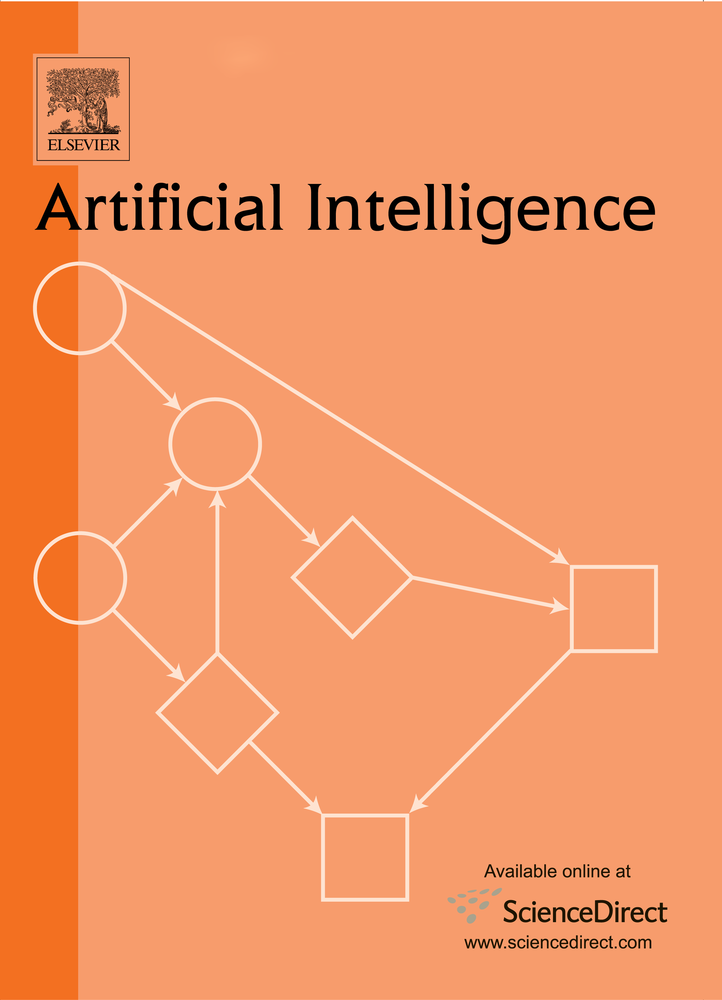

EAAI-23: The 13th Symposium on Educational Advances in Artificial Intelligence
Washington, DC USA Collocated with AAAI-23
Feb. 11-12, 2023
Sponsored by the Association for the Advancement of Artificial Intelligence
EAAI-23
What's New (rev. Jan 19, 2023)
- EAAI-23 Program Schedule is available
The schedule is posted here - EAAI-23 CFP is available
The call for participation is posted here
Important Dates
Submission Dates
- Abstract deadline: August 31, 2022 at 11:59pm UTC-12 (anywhere on earth)
- Paper deadline: September 11, 2022 at 11:59pm UTC-12 (anywhere on earth)
- Notification date: November 18, 2022
- Symposium dates: February 11-12, 2023
About EAAI
The Thirteenth Symposium on Educational Advances in Artificial Intelligence (EAAI-23) will be held along with AAAI-23.
EAAI-23 provides a venue for researchers and educators to discuss pedagogical issues and share resources related to teaching and using AI in education across a variety of curricular levels (K-12 through postgraduate training), with an emphasis on undergraduate and graduate teaching and learning. The symposium seeks contributions showing how to more effectively teach AI, as well as how themes from AI may be used to enhance education more broadly (for example, in introductory computing courses or as a means for teaching computational thinking). We encourage the sharing of innovative educational approaches that convey or leverage AI and its many subfields, including robotics, machine learning, natural language processing, computer vision, and others.
EAAI-23 is expected to include invited talks (including a talk of the recipient of the AAAI/EAAI Outstanding AI Educator Award 2021); Model AI Assignments; special tracks on AI for Education, Resources for Teaching AI in K-12, Human-Aware AI in Sound and Music Mentored Undergraduate Research Challenge, and other exciting activities.
Call for Participation
The call for participation is now available here.
EAAI-23 provides several submission types:
- Full-length papers (7 pages, plus up to 2 pages of references - use AAAI-23 style guidelines)
- Model AI Assignments (abstract, plus files - use custom guidelines)
All submissions should be anonymous for double-blind review.
EAAI-23 will not consider any paper that, at the time of submission, is under review for or has already been published or accepted for publication in a refereed journal or conference. Once submitted to EAAI-23, papers may not be submitted to another refereed journal or conference during the review period. These restrictions do not apply to unrefereed forums or workshops without archival proceedings.
EAAI Mentored Undergraduate Research Challenge 2023
Announcing the Human-Aware AI in Sound and Music Mentored Undergraduate Research Challenge
Looking for AI research ideas to explore with an undergraduate student or team? If so, then join us for this year's challenge!
The Educational Advances in AI (EAAI) Mentored Undergraduate Research Challenge is an opportunity for undergraduate students to acquire research experience under the mentorship of a faculty member. Using fun topics that are broad enough for any field of AI-related research to approach, mentors and students work together to identify a feasible research project that the undergraduate student(s) can complete over several months, typically spanning one semester or the summer break. Students are encouraged to submit their findings in the form of a manuscript to the Undergraduate Research Challenge track at the EAAI 2023 Symposium, co-located with the AAAI 2023 conference.
This year's topic is Human-Aware AI in Sound and Music! Many present-day applications that use AI interact with people, but the AI systems do not necessarily consider the people in these interactions beyond a source of data and queries. People have motivations, preferences, emotions, and other features that affect the way they act. We often take for granted that humans usually account for these features when understanding others and acting around them. Sound and music is also ubiquitous for many individuals, ranging from interactions between objects in the physical world, to auditory signals and verbal communication, to means of expression and entertainment. In what ways do you hypothesize that AI can use sound and music to better understand and/or interact with the people around it? A more detailed description with some related works and ideas can be found in the upcoming AI Matters announcement:
https://www.yetanotherfreedman.com/resources/aimatters_murc23_preprint.pdf
We are also releasing additional resources and code to help motivate mentors and students with possible research project ideas at:
https://www.yetanotherfreedman.com/resources/challenge_haaisam.html.
If you have any questions about the EAAI Mentored Undergraduate Research Challenge or plan to participate with a team, then please contact Rick Freedman (rfreedman@sift.net).
Contact Information
-
Marion Neumann Washington University in St. Louis
https://sites.wustl.edu/neumann/ -
Pat Virtue Carnegie Mellon University
https://www.cs.cmu.edu/~pvirtue/ -
Michael Guerzhoy University of Toronto
http://www.cs.toronto.edu/~guerzhoy/
AAAI/EAAI Outstanding Educator Award
The AAAI/EAAI Outstanding Educator award is presented annually to a person (or group of people) who has made major contributions to AI education that provide long-lasting benefits to the AI community. Examples include innovating teaching methods, providing service to the AI education community, generating pedagogical resources, designing curricula, and educating students outside of higher education venues (or the general public) about AI.
The award consists of a certificate, a $1,000 honorarium, complimentary one-year AAAI membership (new or renewal), and free conference registration to the upcoming EAAI conference and co-located AAAI conference where the award will be conferred. Additional information and nomination instructions are available at http://www.aaai.org/Awards/eaai-award.php, or by writing to eaaiaward@aaai.org.
Past Proceedings
The proceedings of the prior symposia are available:
2017-2022
|
2016
|
2014
|
2013
|
2012
|
2011
|
2010
The repository of Model AI assignments is also available:
2010-2022
Support for EAAI
Generous support for EAAI is made available by:
|
|
 |
|